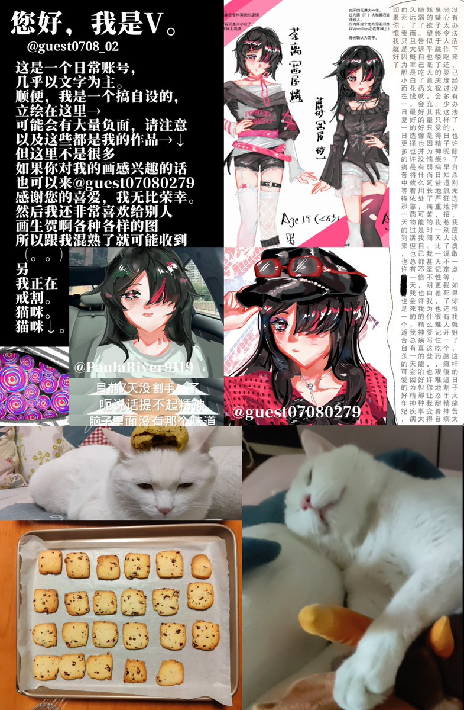

理不尽
@lll_Libujin
RT @guest0708_02: 前世@PaulaRiver9119解冻中…寻回卢关。
你好你好，我是Vermilion。
是个臭画画每天闲得很呐，欢迎私信我，但可能收信不及时...私信刷新不出来。
经常到处乱逛留下一些垃圾话，还请见谅
感兴趣会回关呀，也谢谢你的喜欢
我特别…

Vermilion1.1.0
@guest0708_02
前世@PaulaRiver9119解冻中…寻回卢关。
你好你好，我是Vermilion。
是个臭画画每天闲得很呐，欢迎私信我，但可能收信不及时...私信刷新不出来。
经常到处乱逛留下一些垃圾话，还请见谅
感兴趣会回关呀，也谢谢你的喜欢
我特别特别喜欢给自设姐弟搞AU和if!
不见证不参与争议，我只是一个纸上造粪机 https://t.co/566seBTMO5